Designing an efficient electronic medical record
A clinician-facing workspace for managing patient history, consultations, prescriptions and appointments in one workflow.
My role
End-to-end product designer
Primary users
In-house doctors and clinical teams
Core challenge
Increase efficiency while preserving clinical context and safety
At a glance
Results measured over three months after launch.
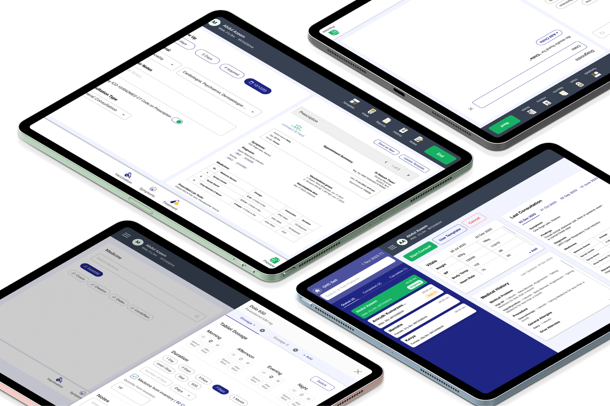
-
Project Name
Electronic Medical Record
-
Contribution:
User Research, UX design, Information architecture, UI Design
-
Timeline:
Nov 2023 - Feb 2024
-
Deliverable:
Website
-
Client Name:
Connect and Heal
Context
Connect and Heal runs an in-house primary-care service for corporate employees. Its doctors were juggling patient history, consultations, prescriptions and appointments across disconnected tools — time spent operating software instead of talking to patients.
My approach
I led the work end to end: stakeholder interviews to set business goals, interviews with doctors across specialities, competitor benchmarking, personas and flows, usability testing of early designs, and the final web interface.
Problem Statement:
Doctors needed one workspace to see a patient's history, run a consultation, write a prescription and manage appointments — fast enough that the tool stays out of the way of the conversation with the patient.
Outcomes and Impact:
Within three months of launch:
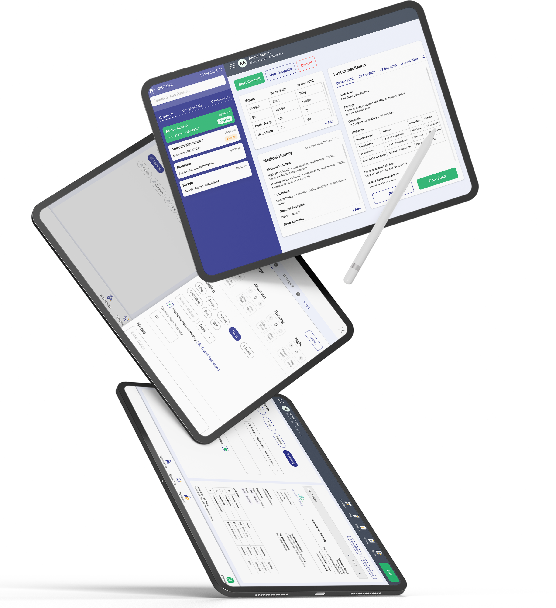
- Reduced the tool's interaction time for doctors by 35-45% which directly increased the consultation time with patient.
- Over the past 3 months, we completed 1,100+ consultations, a 27% increase compared to the previous 3 months.
- Mapping data for diagnosis, symptoms, and medicines in the EMR provided insights that helped improve product features like templates and medicine requirements.
Understanding Market Needs for a Standout Product:
Stakeholder interviews and market benchmarking defined what the EMR needed to do for the business and where existing products fell short.
In-Depth Business Analysis
We Conducted a stake holder Interview to understand and elaborate the problem statement so that we can understand long terms and short term goals for the product they are trying to build, Understanding long term goal will help us design the product in a way where we would also think about scalability factor of the product.
Business Objective
- Access Medical consultation with doctors by providing minimal information for Corporte employee identification in the EMR Portal
- Keep track of all medical records of patients to offer improved medical guidance
- From Business side, migrate customer data from third party application to our platform in order to access efficient data accessibility and effective cross platform
- Personalized experience tailored to each patient's medical record
- Comprehensive Platform for Inventory Management, Efficient Doctor Allocation, and Medical Waste Handling
Understanding Our Users:
I strongly believe that before starting any design, the most powerful asset for any project is good research.
User Interview
We conducted in-depth interviews with doctors from various speciality, gathering valuable insights from diverse perspectives. Here's a summary of the key findings:
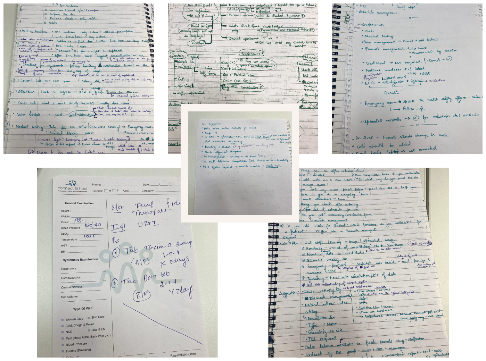
Insights from Research
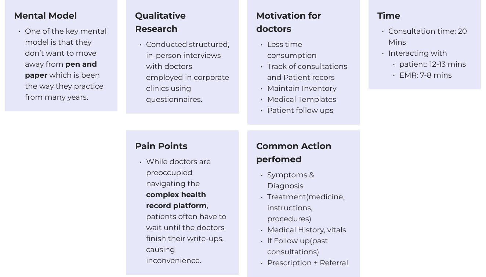
Competitor Analysis:
I benchmarked EMR products used by clinics on information architecture, prescription speed and record visibility.
Benchmarking
Most tools were either feature-heavy and slow to navigate, or simple but missing structured history and templates.
Gaps
That gap — structured clinical data with a fast, familiar flow — became the product positioning.
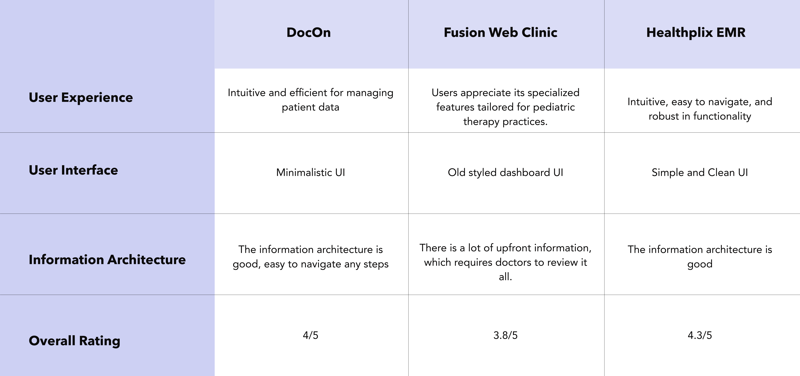
Perceptual Mapping:
User research uncovered a range of competitors, both prominent and obscure. By creating a qualitative perceptual map (Information Architecture vs. User Interface), we were able to plot these competitors, identify market gaps, and guide our strategic positioning
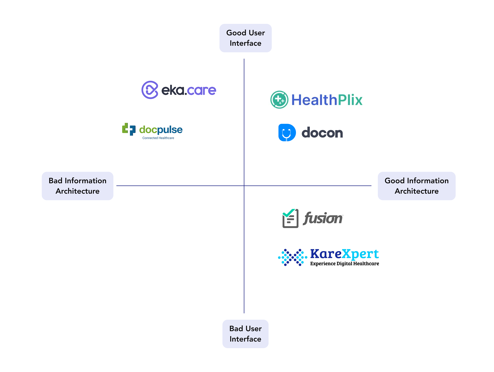
Preparing the Path for User-Driven Designs:
I synthesised interviews into the problems that cost doctors the most time: re-entering history, hunting for past prescriptions and switching tools mid-consultation.
User Persona:
Personas for general physicians and specialists kept decisions anchored to how each actually runs a consultation.
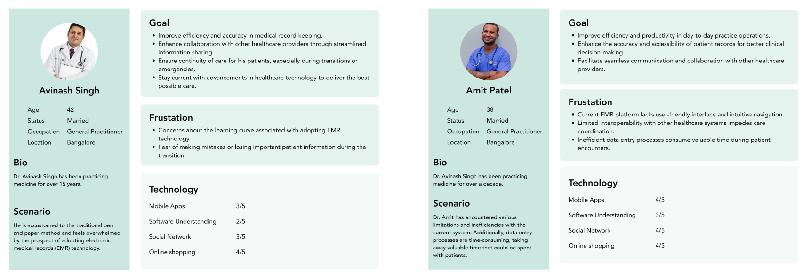
From Insight to Implementation:
I prioritised features by doctor time saved and clinical safety, then mapped them against technical feasibility for the first release.
User Flow:
We are creating a user flow that replicates doctors' traditional pen-and-paper workflow, ensuring a seamless transition and a sense of familiarity.
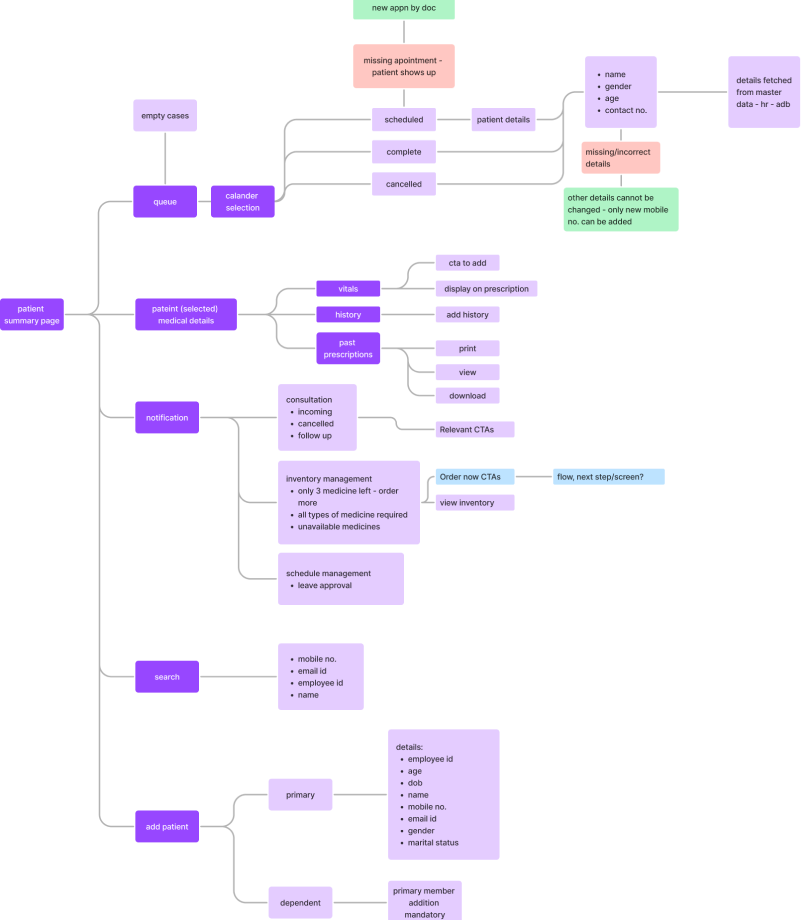
Usability Testing:
Initial designs underwent usability testing and we got lot of inputs to fully meet user needs & business goals. Usability testing helps ensure if the design is heading towards its goal or not.
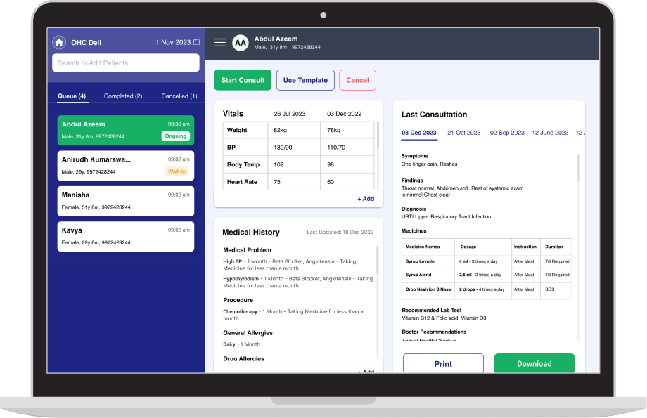
Insights from Usability
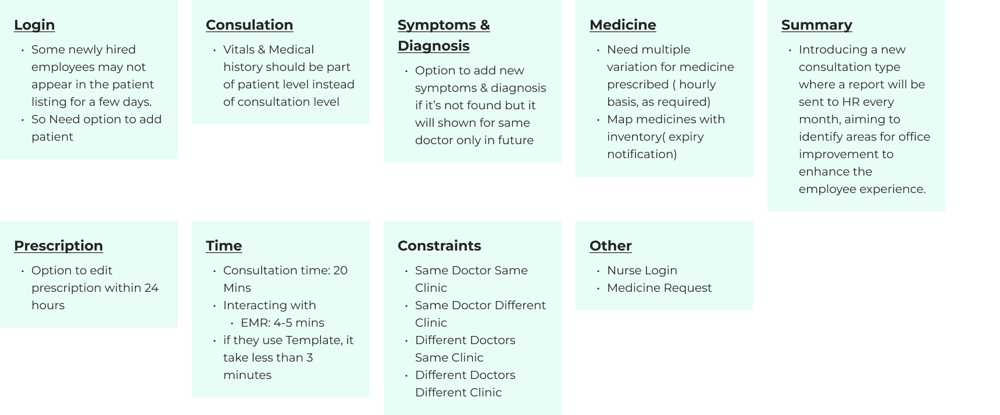
Integrating Insights into User Flow:
For medical information, simply hearing a doctor's voice wasn't enough. We realized patients crave the additional trust and clarity that comes from seeing their doctor's face alongside the explanation. It's a more personal and impactful way to convey medical information.
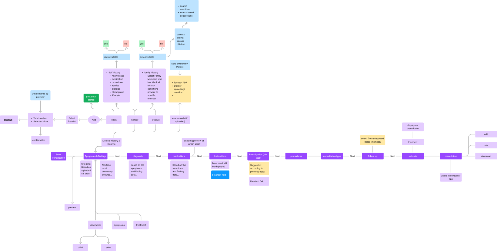
Final Designs:
The final web interface keeps the consultation on one screen: patient summary, the consultation and prescription, with templates and history one click away.
Web Design
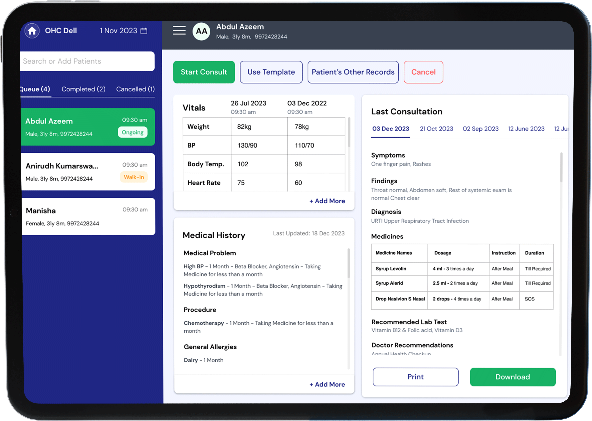
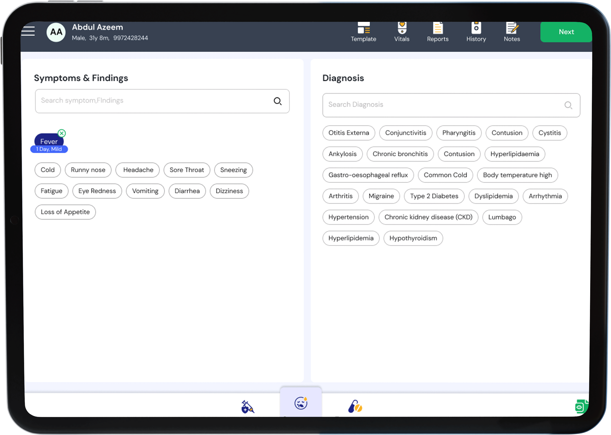
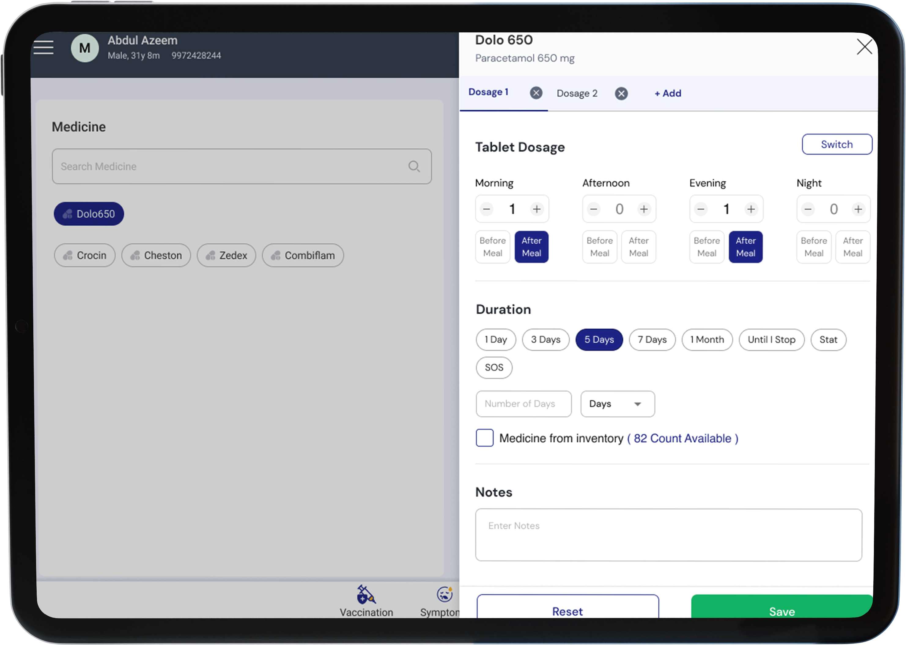
What comes next
- Incorporate medical health records and vitals into the patient app.
- Designing the interface for nurse login and medicine requests.
- Scheduling appointments for in-house clinic visits with doctors.
- Enhance the platform using data insights and feedback from doctors.